None - Fade - Slide - Convex - Concave - Zoom
选择班级
幻灯片样式
Black (default) -
White -
League -
Sky -
Beige -
Simple
Serif -
Blood -
Night -
Moon -
Solarized
下图是珠江西岸先进装备制造产业带示意图。读图，回答1、2题。
1．珠江西岸先进装备制造产业带发展的最有利条件是( )
A．矿产资源丰富
B．土地价格低
C．劳动力价格低
D．产业基础好
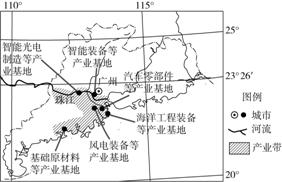解析 第1题，结合图示信息可知，珠江西岸先进装备制造产业带位于经济发达的珠三角地区，良好的产业基础是其发展的最有利条件。故选D项。
2．为促进珠江西岸先进装备制造业的可持续发展，下列做法合理的是( ) ①加强品牌建设，提升品牌优势 ②加强自主创新，形成核心竞争力 ③做大做强骨干企业，推进产业分散 ④加强基础设施建设，完善公共服务体系
A．①②③
B．②③④
C．①②④
D．①③④
第2题，加强品牌和基础设施建设、加强自主创新能力，能够形成促进珠江西岸先进装备制造业可持续发展的着力点；产业分散会导致各城市功能不清，结构趋同，使珠三角地区工业化与城市化动力减弱，此做法不合理。故选C项。
枸杞是宁夏五宝之一，宁夏境内的中宁县是我国著名的枸杞之乡，已经有600多年的枸杞种植历史。中宁地区土壤碱性重，昼夜温差大，这样的自然条件适合枸杞的生长。据此回答3、4题。
3．该地区枸杞品质优良的自然原因有( ) ①科技创新，培育优质品种 ②日照时间长，光照充足 ③水源充足，黑土肥沃 ④昼夜温差大，养分积累多
A．①②
B．②③
C．①④
D．②④
解析 第3题，题干问的是自然原因，而“科技创新，培育优质品种”属于社会经济原因，可排除①；根据材料所给信息“土壤碱性重”可知“黑土肥沃”错误；宁夏位于我国西北地区，气候干旱，日照时间长，光照充足，昼夜温差大，有利于枸杞的生长。
4．该地区农业发展过程中存在的主要生态问题有( ) ①坡地开荒导致水蚀严重 ②过度开垦导致土地荒漠化 ③不合理灌溉导致土壤盐碱化 ④农业结构调整导致酸雨增加
A．①②
B．①④
C．②③
D．②④
第4题，宁夏气候干旱，降水稀少，所以坡地开荒不会导致水蚀严重，而会导致土地荒漠化；该地区气候干旱，蒸发旺盛，不合理的灌溉会导致土壤盐碱化；酸雨主要和工业生产排放的酸性气体有关，与农业结构调整无关。
“去工业化”后的美国，在2010年正式启动了“再工业化”发展战略。“再工业化”是基于工业在各产业中的地位不断降低、大量工业性投资转移海外而国内投资相对不足的状况产生的一种“回归”战略，即重回实体经济，使工业投资在国内集中，避免出现产业结构空洞化。据此回答5、6题。
5．下列不属于美国提出“再工业化”背景的是( )
A．“去工业化”使制造业大量转移到国外
B．经济增长主要由金融等服务产业来驱动
C．国内劳动力成本下降及产业结构变化
D．工业产值在国民经济中的比重日趋下降
解析 第5题，依据材料可知，美国“再工业化”的背景是国内工业投资不足导致工业比重下降，是为了避免产业结构空洞化而提出的。在此过程中其国内劳动力成本并没有下降。故选C项。
6．近年来，美国“再工业化”战略初见成效。下列属于其大力发展的工业部门的是( )
A．服装制造业
B．玩具制造业
C．金属制品制造业
D．生物制药业
第6题，美国技术先进，应大力发展高技术工业，生物制药业属于高技术工业，故D项正确。美国工资成本较高，不适宜大力发展劳动力导向型工业，故A、B两项错误；金属制品制造业属于机械工业，消耗资源多，美国不具有优势，故C项错误。
专业村是指某农村大部分农户商品性地从事一种或多种相互关联的生产或服务活动，从而使该活动的经济总量(如产值)构成这个村经济总量的主体。下面图甲为河南省四个典型专业村的位置图，图乙为影响这四个专业村发展的因素图。据此回答7、8题。
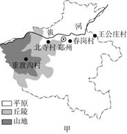 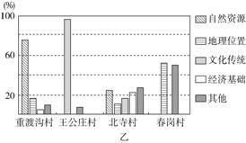7．重渡沟村发展的最优产业应是( )
A．乡村旅游产业
B．民俗文化产业
C．家具制造业
D．铝制品加工业
解析 第7题，由图甲可知，重渡沟村位于山区；由图乙可知，影响重渡沟村发展的最主要的因素是自然资源。由此判断，重渡沟村可利用当地的自然资源发展乡村旅游产业。
8．专业村比传统农业村产品的商品率高，主要原因是专业村( )
A．土地资源丰富
B．水利设施完善
C．机械化水平高
D．特色产品质优
第8题，由于专业村进行专业化生产，所以专业村比传统农业村的产品有特色且产品质量优，商品率高。
下图是我国中部某省三次产业就业比重变化图。读图，回答9、10题。
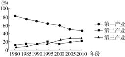9．下列有关该省经济发展的叙述，正确的是( )
A．由于农民工向沿海地区流动，第一产业就业比重迅速减小
B．随着东部地区产业迁入，该省第二产业就业比重持续增大
C．随着城镇化速度加快，第三产业就业比重增幅较大
D．随着区域产业结构调整，三大产业就业比重均明显增大
解析 第9题，由于农业生产效率的提高以及社会消费需求结构的变化，第一产业就业比重迅速减小。由图可知，该省第二产业就业比重1995～2000年呈下降趋势。随着城镇化速度加快，第三产业就业比重增幅较大。随着区域产业结构调整，第一产业就业比重明显减小。
10．为推动该省经济发展，提高就业水平，应积极发展( )
A．劳动力导向型工业
B．技术导向型工业
C．动力导向型工业
D．市场导向型工业
第10题，积极发展劳动力导向型工业可以增加大量就业机会，促进经济发展。
下表反映了我国2017年棉花总产量居前两位的省级行政区的棉花生产情况。据此回答11～13题。
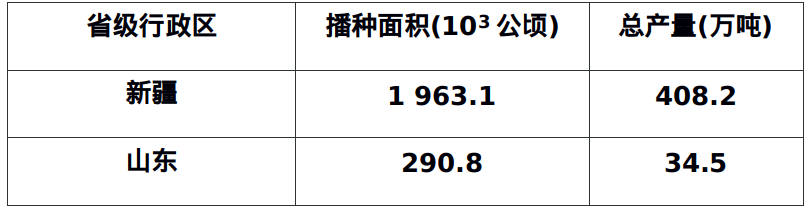11.新疆棉花单产大于山东的主要自然原因是( )
A．降水量大
B．土壤肥沃
C．热量充足
D．气温日较差大
解析 第11题，由表格中总产量与播种面积之比可知，新疆的棉花单产远大于山东。新疆位于内陆，气候干旱，降水量较少，植被较少，土壤有机质含量较少，肥力较差；新疆主要棉花种植区位于南疆，属于暖温带，山东也属于暖温带，热量条件相差不大；新疆属于温带大陆性气候，气候干旱，光照强，气温日较差大，光合作用强，有利于有机质的积累，因此棉花的产量较高，D项正确。
12．山东省棉花生产可持续发展的方向是( )
A．扩大棉花种植面积，提高总产量
B．培育优良品种，提高生产技术
C．大范围进行间作、套种，减少病虫害，提高单产
D．大力发展水利建设，满足棉花生产对水分的需求
第12题，山东是我国的传统产棉区，农业的可持续发展应该是在生态环境良好的前提下，提高棉花产量与品质。扩大种植面积，提高总产量，可能产生过度开垦、过度开发的现象，从而产生生态问题；培育优良品种，提高生产技术，进而提高棉花的产量与品质，是山东棉花生产实现可持续发展的有效途径，B项正确；间作、套种的方式应该因地制宜，有选择性地进行；大力发展水利建设，满足棉花生产对水分的需求是保证棉花生产的基本条件，不属于山东省棉花生产可持续发展的方向。
13．山东魏桥创业集团是我国大型的棉纺织企业，产品80%以上用于出口。该集团把棉纺生产基地设在山东，而没有像其他棉纺企业一样到新疆建设棉纺生产基地，根本原因是( )
A．新疆的招商引资力度较小，且劳动力成本高
B．致力于拉动山东的经济发展，当地政府的支持力度大
C．山东地理条件优越，利于产品出口
D．可调动当地棉农积极性，有效解决就业
第13题，新疆经济较为落后，劳动力成本较低，A项错误；西部地区的政策优势明显，B项错误；与新疆相比，山东位于沿海地区，港口众多，地理条件优越，在产品进出口方面拥有便捷的条件，C项正确；调动当地棉农积极性，有效解决就业是棉纺生产基地建设的意义，而非原因。
那曲地区的牦牛早年主要作为役用(耕作、运输)，近十多年来，以牦牛奶、牦牛肉干、牦牛绒衫、牦牛工艺品等为特色的牦牛产业快速兴起。下图为那曲地区位置及区域地理要素分布图。读图，回答14、15题。
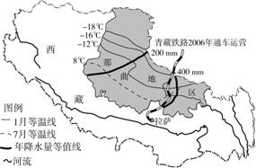14．促使那曲地区由以牦牛役用为主向以牦牛奶、牦牛肉干、牦牛绒衫、牦牛工艺品等为特色的牦牛产业转变的主要原因是( )
A．全球气候变暖，牧草的产量显著增加
B．交通运输条件改善，市场规模扩大
C．西藏经济水平提高，当地对牦牛制品的需求显著扩大
D．全球气候变暖，牦牛已不再适合在当地担当耕作和运输任务
解析 第14题，全球气候变暖，牧草产量的增加是缓慢的，不会在短时间内显著增加；青藏铁路的开通，极大地改善了青藏地区的交通运输条件，便于牦牛产业相关产品外运，B项正确；牦牛产业相关产品的主要市场是西藏以外的地区，西藏本地的市场需求有限；牦牛在当地担当耕作和运输任务不受全球气候变暖影响。
15．青藏铁路开通后，铁路沿线某地区计划大幅度扩大牦牛产业的生产规模，但遭到了部分人的反对，其原因最可能是( )
A．高寒草场环境承载力弱，单位面积载畜量小
B．生态脆弱，居住人口少，当地市场需求量小
C．气候寒冷的时间长，生产加工周期短
D．地势崎岖，交通不便，产品外运困难
第15题，青藏地区生态脆弱，高寒草场产草量低，单位面积草场上能放养的牦牛数量有限，如果大幅度扩大牦牛产业的生产规模，则不能保证有充足的原料供应，且可能会加剧生态恶化，A项正确。
滴灌是现代农田节水灌溉技术之一。目前，滴灌技术在我国推广很难。下图为我国西北地区某地滴灌技术应用示意图。据此回答16、17题。
16．该地区采用这种滴灌技术的主要目的是( )
A．降低输水管道坡度
B．营造田园景观
C．提高水资源利用率
D．减轻病虫害
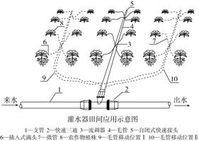第16题，我国西北地区降水稀少，水资源短缺，这种先进的滴灌技术将水直接送到农作物根部附近，用水量小且水资源损失少，可节约有限的水资源，提高农田灌溉用水效率。
17．目前，影响我国西北地区滴灌技术推广的限制性社会经济因素是( )
A．水资源不足
B．农业科技落后
C．信息交流不畅
D．经济成本较高
第17题，滴灌技术经济成本较高，在经济比较落后的西北地区推广，必然会受到经济成本较高的限制。
近年来，苏州市沿江地带形成以冶金、能源、纺织、化工、粮油等基础产业为主的产业群体。下图中的Ⅰ、Ⅱ、Ⅲ示意苏州市城市化、工业化发展走廊。读图，完成18、19题。
18．与Ⅰ、Ⅱ走廊相比，Ⅲ走廊发展的有利条件是( )
A．当地市场广阔
B．水运便利
C．科技实力强
D．原有工业基础雄厚
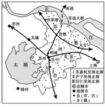解析 第18题，从Ⅲ走廊的位置可以看出，其相对于I、Ⅱ走廊发展的有利条件是靠近长江，水运便利。
19．促进Ⅲ走廊可持续发展的措施是( )
A．建设功能结构趋同的城市群
B．进一步推进原有单一的重化工业发展
C．加强重化工业与港口工业的新技术应用，促进产业升级
D．依托当地的矿产资源优势，大力发展冶金与能源等产业
第19题，功能结构趋同的城市群，不能有效地合作互补，易发生不良竞争，单一的重化工业耗能多、污染严重，也不符合可持续发展思想，可排除A、B两项；苏州当地缺乏矿产资源，不适合大力发展冶金与能源等产业，D项不正确；加强重化工业与港口工业的新技术应用，促进产业升级符合可持续发展的思想。
城市集聚效应是指各种产业和经济活动在空间上集中产生的经济效果，以及吸引经济活动向一定地区靠近的向心力，是导致城市形成和不断扩大的基本因素。下图示意城市集聚效应与工业化水平的关系。读图，完成20、21题。
20．伴随工业化水平提高，城市集聚效应( )
A．逐渐增强
B．逐渐减弱
C．先增强后减弱
D．先减弱后增强
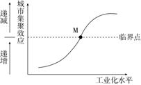解析 第20题，据图可知，M点以前城市集聚效应随着工业化水平的提高而增强；M点以后，城市集聚效应随着工业化水平的提高而减弱，故C项正确。
21．城市集聚效应达到M点后，将可能出现( )
A．逆城市化现象
B．工业化水平下降
C．城市规模萎缩
D．农业人口增加
第21题，城市集聚效应达到M点后，随着工业化水平的提高，城市集聚效应减弱，城市将出现分散现象，即出现逆城市化。
湾区是指由一个海湾或相连的若干海湾、港湾、邻近岛屿共同组成的区域。深圳市2014年《政府工作报告》中首次提出要聚焦深圳“湾区”经济发展。据此回答22、23题。
22．深圳湾区集聚了我国南方重要的城市群，其形成的社会经济条件是( ) ①东南部沿海位置优越 ②产业集聚 ③海陆交通便利 ④气候适宜
A．①②
B．②③
C．③④
D．①④
解析 第22题，题干要求选出其形成的社会经济条件，①④都是自然条件，故排除A、C、D三项。
23．深圳发展“湾区”经济的意义有( ) ①共享高效的资源配置 ②辐射并带动周边区域的发展 ③承接产业转移 ④提高滨海产业集群的质量
A．①②④
B．②③④
C．①②③
D．①③④
第23题，深圳发展“湾区”经济的意义在于加强与香港、澳门、台湾地区的交流合作，推动区域资源高效配置、市场深度融合，辐射并带动周边区域发展，促进产业升级，推动深圳城市转型，故深圳应该是将产业转移出去，排除③。
下图示意辽宁西北部某地土地利用的变化。将该区域分为25个方格，每个方格中的两个数字按左右顺序分别代表1979年和2005年的土地利用类型。据此完成24、25题。
24．图中所示区域土地利用变化会导致( )
A．土地次生盐渍化加剧
B．空气湿度明显增大
C．干旱、洪涝发生频率减小
D．水生生物物种增加
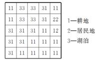解析 第24题，从图中可知该地土地利用的主要变化是湖泊变为耕地，即围湖造田，湖泊面积减小。这种变化会导致水生生物物种减少，空气湿度减小，干旱、洪涝发生频率增大。而辽宁西北部位于半湿润向半干旱过渡的地带，围湖造田发展种植业，易加剧土地次生盐渍化。
25．目前有利于促进图示区域农业可持续发展的举措是( )
A．推广蔗基鱼塘
B．推广水稻种植
C．发展节水灌溉农业
D．发展大牧场放牧业
第25题，由题干可知该地位于辽宁西北部地区，纬度较高且降水较少，不适宜种植甘蔗和水稻，所以该地不能推广蔗基鱼塘和水稻种植。该地耕地较多，不适宜发展大牧场放牧业，应该发展节水灌溉农业。
26．读图文材料，回答下列问题。(12分) 博鳌亚洲论坛2018年年会于4月8日至11日在中国·海南博鳌举行，主题为“开放创新的亚洲，繁荣发展的世界”。海南将进行系统谋划，站在服务国家战略的高度，开展对外开放、生态文明、产业发展等方面的体制机制创新，将推动新一轮改革开放，海南将以更加精准、更加配套、更加革命的举措，把海南打造成更加开放、更有活力、更国际化的经济特区。下图是海南岛及周边经济区域简图。
(1)从位置和交通方面分析海南的区位优势。
(1)位置优势：临近海洋，面向东南亚，背靠大西南，邻近港澳，是我国西南、中南等地区的出海大通道。交通优势：多优良港口，海岸线长，临近印度洋—太平洋航线；有多条铁路与我国其他地区、东南亚国家相通。
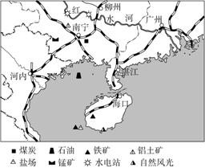解析 第(1)题，从图中可看出海南位于我国南部沿海，面向东南亚，背靠大西南，邻近港澳，是我国西南、中南等地区的出海大通道；海岸线长，多优良港口，临近印度洋—太平洋航线，有多条铁路与我国其他地区、东南亚国家相通。
(2)南宁重点规划发展铝加工产业，试分析当地该产业发展的优势条件。
(2)铝土矿资源丰富；水能资源丰富；交通便利；市场广阔等。
第(2)题，铝加工产业是动力导向型工业，其发展的优势条件主要从资源、能源、交通、市场等方面分析。结合图例可看出南宁铝土矿资源丰富；邻近水电站，水能资源丰富；有铁路线经过，交通便利；距我国珠三角经济发达区近，市场广阔。
(3)为了海南经济区的可持续发展，请从产业综合发展的角度提出你的建议。
(3)发展特色农业，走生态农业之路；吸引资金，引进技术，加快传统产业升级换代；发展科技，促进新兴产业和高新技术产业发展；推动交通运输业发展(基础设施建设)；利用“海上丝绸之路”的重要地位，大力发展现代物流业；利用自然条件优势，大力发展旅游业；整治环境污染，美化环境等。
第(3)题，注意题干中“为了海南经济区的可持续发展”，所以应从农业、工业和第三产业的可持续发展方面提出建议。
27．阅读材料，回答下列问题。(14分) 材料一 我国著名的“三大荒”如今已经变成了“三大仓”。“北大荒”变成了粮仓，“西大荒”变成了棉仓和粮仓，“南大荒”变成了橡胶林和热带经济作物仓。
材料二 下图为我国“三大荒”分布示意图。
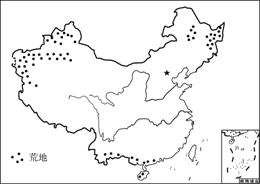材料三 下图为“北大荒”某农场土地利用结构图。
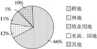(1)从地形类型看，南方荒地属于 山地、丘陵，北方荒地属于平原。从农业发展限制性条件看，北大荒主要是热量不足，西大荒主要是水源不足。
解析 第(1)题，从地形类型看，我国南方荒地主要位于山地、丘陵地区，而北方荒地主要位于平原地区。从农业发展限制性条件看，北大荒纬度高，热量不足；西大荒距海远，水分不足。
(2)简述“南大荒”发展橡胶生产，“西大荒”发展棉花生产的有利气候条件。
(2)南大荒：主要为热带季风气候，水热充足，雨热同期。西大荒：主要为温带大陆性气候，夏季高温，光照强，昼夜温差大。
第(2)题，分析气候对农业生产的影响，主要从光照、热量、降水及水热组合等方面进行。
(3)简要说明目前“北大荒”粮食生产的特点和有利条件。
(3)特点：生产规模大；机械化水平高。有利条件：温带季风气候，雨热同期；平原面积广大；黑土肥沃，有利于作物生长；地广人稀，有利于机械化耕作；国家政策扶持。
第(3)题，目前“北大荒”粮食生产的特点可结合所学知识分析；分析农业生产条件可从气候、地形、土壤、水源、政策等方面进行。
(4)我国东北黑土区现有大型侵蚀沟20余万条，每年仅因侵蚀沟吞噬耕地而损失的粮食量就高达40亿千克。试结合材料三分析“北大荒”黑土侵蚀的原因与可持续发展措施。
(4)原因：人类过度开垦和不合理的耕作，使黑土失去植被的保护。 措施：植树种草，增加植被覆盖率，侵蚀严重地区退耕还林、退牧还草；平整土地，完善排水系统，打坝淤地；调整农业结构，因地制宜，走产业优化发展的道路，发展农、林、牧等综合性农业经济。
第(4)题，东北地区的黑土侵蚀属于水土流失，主要是人为原因造成的，可从不合理的人类活动导致植被破坏等方面分析；可持续发展的措施可从工程措施、农业技术措施、生物措施等方面分析。
28．读下图，回答下列问题。(11分) 我国从20世纪80年代开始进行商品性农业基地建设，到目前已经建成若干商品粮基地、商品棉基地和油料糖料作物基地。
(1)下列关于图中①③④⑦四个著名商品性农业基地与其相对应的优势农产品的组合，正确的是( )
A．①—甜菜、水稻、亚麻
B．③—棉花、水稻、油菜
C．④—甘蔗、水稻、甜菜
D．⑦—水稻、亚麻、甜菜
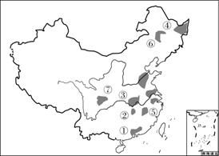解析 第(1)题，结合各农业基地的位置和当地气候特点，判断其优势农产品。
(2)简要分析①地区发展商品农业存在的主要问题及发展方向。
(2)①地区为珠江三角洲，其发展商品农业存在的问题：地势低洼，易涝；人口稠密，农产品商品率不高；宜农荒地少等。发展方向：治理低洼、易涝地，发展基塘农业等混合农业；通过提高农业生产技术和发展多种经营来提高商品率。
第(2)题，珠江三角洲地区地势低洼，降水较多，容易发生洪涝灾害，且人多地少，商品率低。
(3)简要分析④⑥两个商品粮基地粮食商品率比较高的主要原因。
(3)土地辽阔，耕地面积广；人口较少，人均粮食产量较高。
第(3)题，④⑥两地位于东北地区，地广人稀，粮食商品率比较高。
(4)图中②③⑤所在区域农业发展存在的主要问题是什么？该如何应对？
(4)问题：人口稠密，人均耕地少；湖泊面积萎缩，洪涝灾害较多。解决办法：因地制宜，调整农业生产结构，发展多种经营；退耕还湖，改善生态环境；加强农田基础设施建设，提高抗灾能力等。
第(4)题，②③⑤位于长江流域，人口稠密，人均耕地少；加上季风气候，降水不稳定，洪涝灾害较多。可从调整农业生产结构、退耕还湖和加强农田基础设施建设等方面分析存在的问题。
29．阅读材料，回答下列问题。(13分) 材料一 《长江三角洲地区区域规划》指出，长江三角洲地区包括上海、江苏和浙江，区域面积21.07万平方千米，是全国发展基础较好、体制环境较优、整体竞争力较强的地区之一。
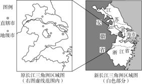材料二 环渤海经济圈是指以辽东半岛、山东半岛、京津冀为主的环渤海滨海经济带，同时辐射到山西、辽宁、山东及内蒙古中东部。
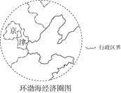(1)试分析长江三角洲区域的扩大对苏北区域经济发展的有利影响。
(1)提高交通便利度，促进城市第三产业发展，提升商业地位和中心城区土地价格，扩大城区的范围；伴随优惠政策的出台，投资规模增大，促进了工业化发展，进而带动城市化发展；有利于会展、旅游、商贸、物流等产业的发展，促进区域产业结构升级；促进地区之间的合作与交流。
解析 本题以长江三角洲和环渤海经济圈两大区域为背景，考查区域经济发展、城市化、区域差异等知识点。第(1)题，其影响可以从交通、第三产业、工业化、城市化、产业结构、地区之间的合作与交流等方面分析。
(2)简述苏北中小城市的发展对沪宁杭大城市发展的意义。
(2)分散大城市职能；缓解大城市的土地、交通压力；有利于保护和改善大城市环境；促进城市合理化发展。
第(2)题，其意义可从分散大城市职能、缓解大城市压力、改善城市环境等方面分析。
(3)从位置、资源、交通等方面分析环渤海经济圈和新长江三角洲两大区域的共同点和不同点。
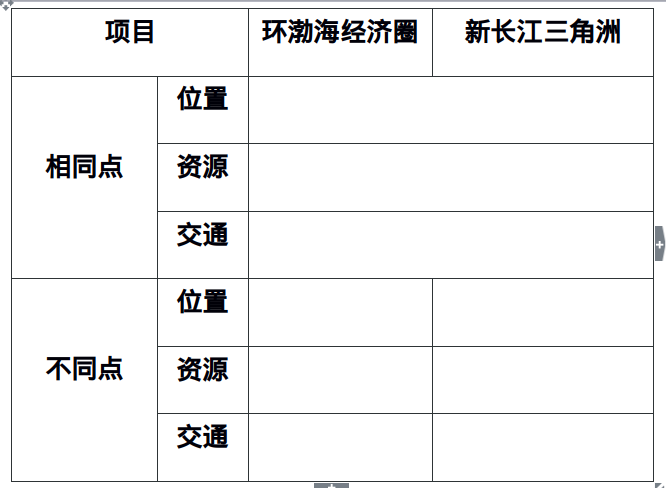第(3)题，对表中空格进行填充时需要依据各地区的地理条件。